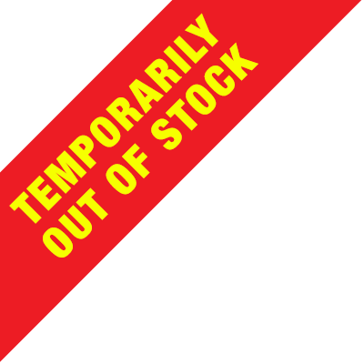

Remera Moplo 1
¡Lleve al Moplo 1 adonde usted quiera!

Un par de Moplos sueltos en la noche porteña se adentran en la oscuridad del realismo mágico y el absurdo. Después ingresan al Rincón del Fauno, comen, beben, opinan, escuchan música, cantan, hablan de la vida misma, de bueyes perdidos y planean una fuga sin precedentes. ¡Aún no sabemos quien pagará la cuenta!
Listen to "La Cena de los Moplos" on Spreaker.Usted es libre, como el viento, libre como el mar. Y como decimos los Moplos, recordando a nuestro Moplo superior, "sea gánico". Ingrese como desee...le aseguramos que no se arrepentira.
Sea parte de la exclusiva tienda-comunidad Moplo. Ahora no solo nos escucha, tambien nos acompaña (y nosotros lo acompañamos). Tazas, buzos, remeras y una membrasía exclusiva para moplear juntos. ¡The world is Moplo!
¡Lleve al Moplo 1 adonde usted quiera!
¡Lleve al Moplo 2 adonde usted quiera!
Rellenela de lo que quiera como buen Moplo
¿Sabía usted que hay un Moplo 3? ¡Preventa exclusiva para socios fieles!